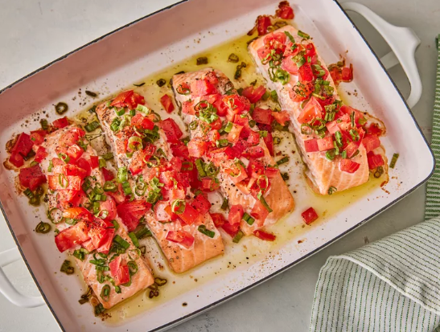

salmon-bake

Delicious salmon-bake
Ingredients
- 1 (1 pound) salmon fillet, halved
- 1 small tomato, chopped
- 5 green onions, chopped
- ¼ teaspoon salt
- ¼ teaspoon pepper
- Gather all ingredients.
- Preheat the oven to 350 degrees F (175 degrees C).
-
Place salmon on a lightly oiled sheet pan or in a shallow baking dish,
folding under thin outer edges of fillets for even cooking.
-
Top salmon with chopped tomatoes and green onions, and season with salt
and pepper.
-
Cook salmon in the preheated oven, uncovered, until fish flakes easily
with a fork, about 20 minutes.